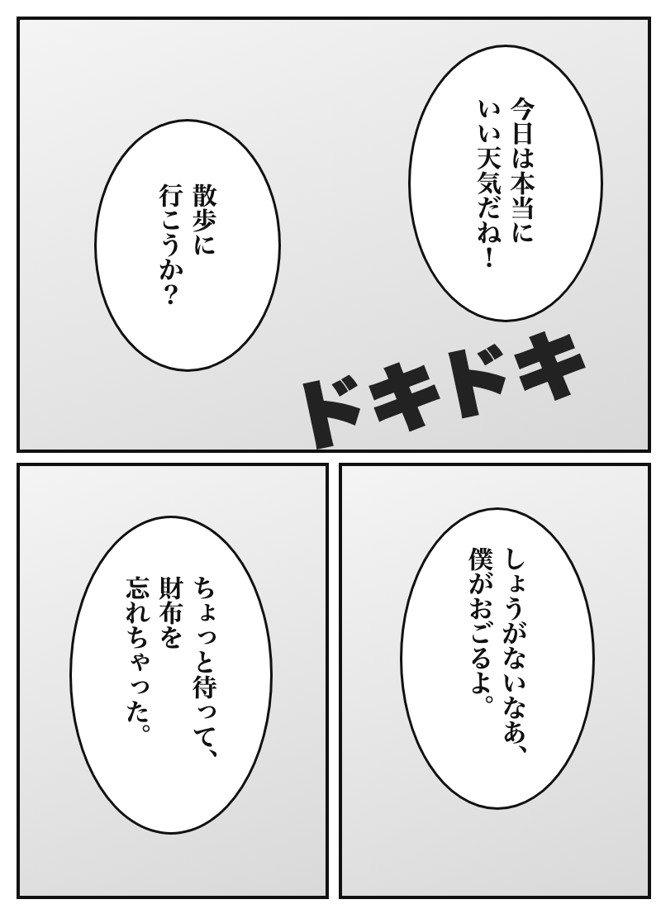

Manga reader
An <img>. “Next page” swaps its picture, which Auto OCR should pick up on its own.

1 / 2
Game scene
A <div> with a CSS background: read from a screenshot of the tab.
Shop sign
A <canvas> that redraws every few seconds between two signs.